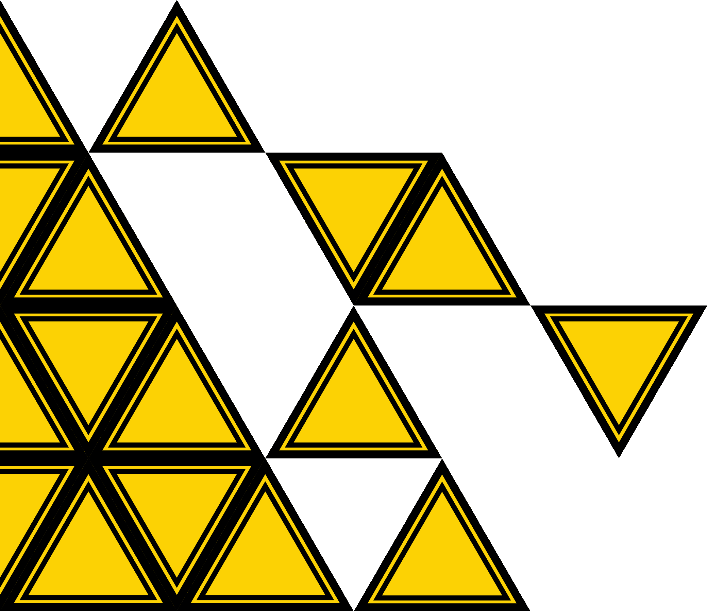
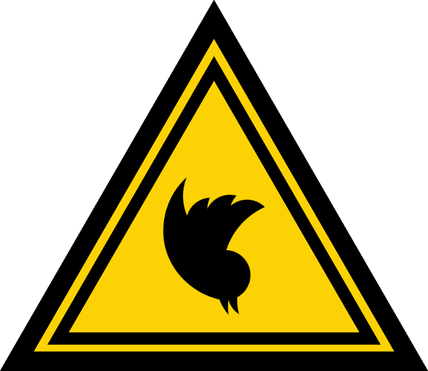
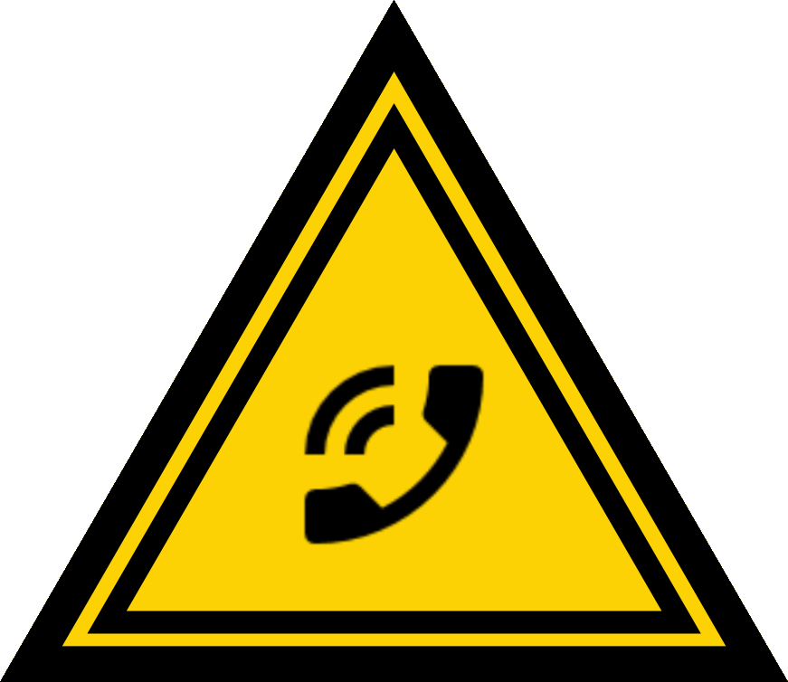
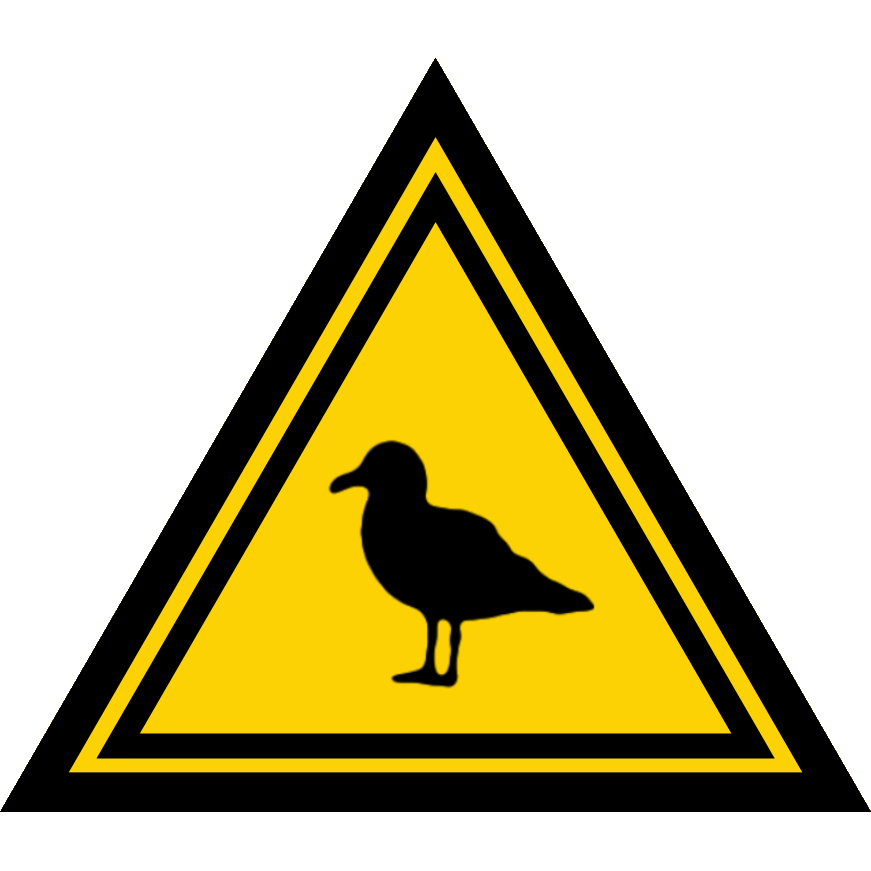
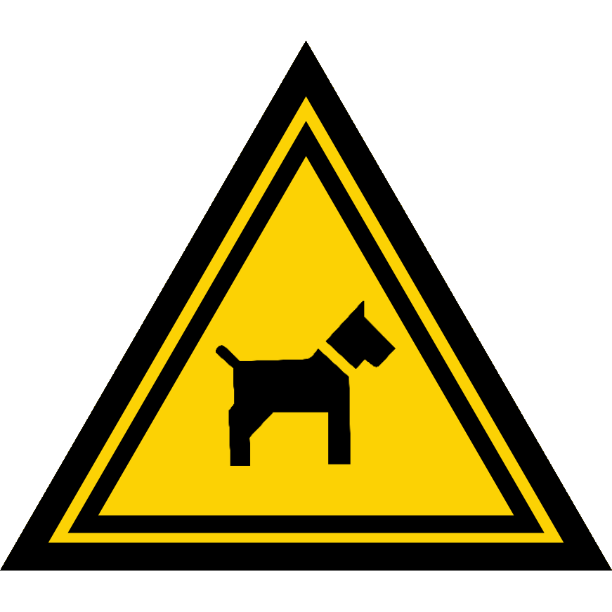

 


credits
×
<!-- iframes are used for embedding videos -->
×
×
×
CALL NOW:
0800 464 3202
0800 464 3376
0800 464 3411
numbers are not live
×
CREDITS
performers (audio) : James Murphy-Stevens, Sian Aislinn Elder and Sam Parker
performers (live) : Fynn Roberts and Leigha-jo Henson
website, art and dog wrangler : Max Robins
testers : Ruby Sarah Woods, Tom Pettit, Mich Sanderson, and Florian Saturley
writer (words, code) and producer : Alex Robins
special thanks : Plymouth Art Weekender, Visual Arts Plymouth, Jon Stephenson (Open Media)